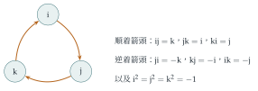

STEP III 1993，第 5 題
繼續之前，請先閱讀題目（原題為英文）。題目載於 STEP Support Programme 的題目資料庫： step.maths.org/questions/93-s3-q5
引子
1843 年 10 月 16 日，哈密頓（William Rowan Hamilton）與妻子沿着都柏林的皇家運河散步時，苦思多年的問題忽然靈光一閃，有了答案。他一直想仿照複數把一對對的數相乘那樣，把三個一組的數相乘，卻屢試屢敗。他突然看出，答案需要的是四個數，而且乘法的次序不可調換：\(ij \neq ji\)。他把這些法則刻在布魯穆橋（Brougham Bridge）的石頭上： \[\mathrm{i}^2 = \mathrm{j}^2 = \mathrm{k}^2 = \mathrm{ijk} = -1.\] 這就是四元數（quaternions）。本題用複數對把四元數構造出來，並在其中找到一個只有八個元素、乘法帶點扭曲的小羣。時至今日，每一款電腦遊戲、每一部飛行模擬器、每一套太空船導航系統，都用四元數來描述三維空間中的旋轉。
動筆之前
羣的各項定義見 第 6.6 節。這裏再補充兩個用語：羣中元素 \(g\) 的階（order），是指使 \(g^n = e\) 成立的最小正整數 \(n\)；若兩個羣之間存在一個保持運算的一一對應，則稱這兩個羣同構（isomorphic），也就是說，它們是「換了標籤的同一個羣」。
把數對 \((z_1, z_2)\) 看成代表一個「數」\(z_1 + z_2\mathrm{j}\)，其中 \(\mathrm{j}\) 是一個新符號，滿足 \(\mathrm{j}^2 = -1\)，並且對任意複數 \(w\) 有 \(\mathrm{j}w = w^*\mathrm{j}\)。試用這些法則計算 \((z_1 + z_2\mathrm{j})(w_1 + w_2\mathrm{j})\)。得出的是否就是 \(\circ\) 的公式？
\((z_1 + z_2\mathrm{j})(w_1 + w_2\mathrm{j}) = z_1w_1 + z_1w_2\mathrm{j} + z_2\mathrm{j}w_1 + z_2\mathrm{j}w_2\mathrm{j} = z_1w_1 + z_1w_2\mathrm{j} + z_2w_1^*\mathrm{j} + z_2w_2^*\mathrm{j}^2\)，即 \((z_1w_1 - z_2w_2^*) + (z_1w_2 + z_2w_1^*)\mathrm{j}\)。答案是肯定的：運算 \(\circ\) 其實就是喬裝了的四元數乘法。
逐步解題
階段 1 借助矩陣證明結合律
直接驗證 \((a \circ b) \circ c = a \circ (b \circ c)\)，計算十分冗長。其實有更巧妙的方法。
把 \((z_1, z_2)\) 對應到複矩陣 \(M = \begin{pmatrix} z_1 & z_2 \\ -z_2^* & z_1^* \end{pmatrix}\)。矩陣乘積 \(M(z_1, z_2)\,M(w_1, w_2)\) 的第一行是甚麼？
乘積的第一行是 \(\bigl(z_1w_1 - z_2w_2^*,\ z_1w_2 + z_2w_1^*\bigr)\)，正好是 \((z_1, z_2)\circ(w_1, w_2)\)；第二行是 \(\bigl(-(z_1w_2 + z_2w_1^*)^*,\ (z_1w_1 - z_2w_2^*)^*\bigr)\)，所以乘積仍具有同樣的特殊形式。因此 \(M(a \circ b) = M(a)M(b)\)。矩陣乘法滿足結合律（associativity），而 \(M\) 是一對一的（從第一行便可讀出 \(z_1\)、\(z_2\)），所以 \(\circ\) 滿足結合律。■
階段 2 不滿足交換律
\((0, 1)\circ(\mathrm{i}, 0) = (0 \cdot \mathrm{i} - 1 \cdot 0,\ 0 \cdot 0 + 1 \cdot \mathrm{i}^*) = (0, -\mathrm{i})\)，但 \((\mathrm{i}, 0)\circ(0, 1) = (0, \mathrm{i})\)。所以 \(\circ\) 不滿足交換律（commutativity）。
四個特殊乘積可由定義直接得出： \[\begin{aligned} (z, 0)\circ(w, 0) &= (zw, 0), & (z, 0)\circ(0, w) &= (0, zw), \\ (0, z)\circ(w, 0) &= (0, zw^*), & (0, z)\circ(0, w) &= (-zw^*, 0). \end{aligned}\]
階段 3 八個元素的羣
用四元數的記法，\(A = 1\)，\(C = \mathrm{i}\)，\(B = \mathrm{j}\)，\(D = \mathrm{i}\mathrm{j} = \mathrm{k}\)，而 \(E, G, F, H\) 則分別是它們的相反數。\(S_1\) 的每個元素都具有 \((u, 0)\) 或 \((0, u)\) 的形式，其中 \(u \in \{1, \mathrm{i}, -1, -\mathrm{i}\}\)。
利用四個特殊乘積，證明 \(S_1\) 是封閉的。單位元是甚麼？
由四個特殊乘積可知，兩個形如 \((u, 0)\) 或 \((0, u)\) 的元素相乘，結果仍是這兩種形式之一，其第一個或第二個分量為 \(uv\)、\(uv^*\) 或 \(-uv^*\)。由於 \(\{1, \mathrm{i}, -1, -\mathrm{i}\}\) 在乘法、取共軛及取相反數之下都封閉（closed），乘積仍在 \(S_1\) 之內。單位元（identity）是 \(A = (1, 0)\)：\((1, 0)\circ(w_1, w_2) = (w_1, w_2)\)，而且 \((w_1, w_2)\circ(1, 0) = (w_1, w_2)\)。
求出每個元素的階和逆元。
\(A\) 的階為 \(1\)。\(E\circ E = (-1, 0)\circ(-1, 0) = (1, 0)\)，所以 \(E\) 的階為 \(2\)。對於 \(C = (\mathrm{i}, 0)\)：\(C\circ C = (-1, 0) = E\)，所以 \(C\) 的階為 \(4\)，而 \(C^{-1} = C^3 = E\circ C = G\)。對於 \(B = (0, 1)\)：\(B\circ B = (-1 \cdot 1^*, 0) = (-1, 0) = E\)，所以 \(B\) 的階為 \(4\)，而 \(B^{-1} = F\)。同理，\(D\circ D = (-\mathrm{i}\cdot\mathrm{i}^*, 0) = (-\mathrm{i}\cdot(-\mathrm{i}), 0) = (-1, 0) = E\)，所以 \(D\) 的階為 \(4\)，逆元（inverse）為 \(H\)。至於 \(G\)、\(F\)、\(H\)，它們分別是 \(C\)、\(B\)、\(D\) 的逆元，階同樣為 \(4\)。總結如下：
| 元素 | \(A\) | \(B\) | \(C\) | \(D\) | \(E\) | \(F\) | \(G\) | \(H\) |
|---|---|---|---|---|---|---|---|---|
| 逆元 | \(A\) | \(F\) | \(G\) | \(H\) | \(E\) | \(B\) | \(C\) | \(D\) |
| 階 | \(1\) | \(4\) | \(4\) | \(4\) | \(2\) | \(4\) | \(4\) | \(4\) |
既有封閉性和結合律（第 1 步），又有單位元和逆元，\(S_1\) 是一個羣。■ 這個羣稱為四元數羣（quaternion group）\(Q_8\)。
階段 4 一個子羣
\(\{A, B, E, F\} = \{1, \mathrm{j}, -1, -\mathrm{j}\}\) 由 \(B\) 的各次冪組成：\(B^1 = B\)，\(B^2 = E\)，\(B^3 = F\)，\(B^4 = A\)。所以它是封閉的，並且包含各元素的逆元：這是一個子羣（subgroup），而且是階為 \(4\) 的循環羣（cyclic group）。矩陣 \(J = \begin{pmatrix} 0 & 1 \\ -1 & 0 \end{pmatrix}\) 滿足 \(J^2 = -I\)，\(J^3 = -J\)，\(J^4 = I\)，所以它同樣生成一個階為 \(4\) 的循環羣。對應 \(B^k \leftrightarrow J^k\) 是一個同構。■ （事實上，\(J\) 正是 \(M(0, 1)\)，即 \(B\) 所對應的矩陣。）
回顧
用矩陣來表示。結合律直接驗證起來十分費勁，這裏卻可從矩陣乘法繼承過來。
找出公式背後的結構。古怪的運算 \(\circ\) 原來就是四元數乘法，看穿了這一點，一切都變得容易。
階和逆元刻劃了一個羣。單看各元素的階，已可見 \(Q_8\) 與別不同：一個階為 \(2\) 的元素，六個階為 \(4\) 的元素。
背後的數學
實數構成一個一維的數系，在其中可以做加法、乘法和除法；複數則構成一個二維的數系。哈密頓的四元數是四維的，除法依然可行，但乘法不再滿足交換律（圖 6.7.1）。1878 年，弗羅貝尼烏斯（Ferdinand Frobenius）證明了 \(\mathbb{R}\)、\(\mathbb{C}\) 和 \(\mathbb{H}\)（取自 Hamilton 的首字母）這三者，是實數域上僅有的、乘法滿足結合律的有限維「可除代數」（division algebras）。如果放棄結合律，但保留一個可乘的大小，即 \(|xy| = |x|\,|y|\)，一如實數、複數和四元數那樣，那就恰好還多一個：八維的八元數（octonions），由 John Graves 和凱萊（Arthur Cayley）在 1840 年代發現。赫維茲（Adolf Hurwitz）於 1898 年證明，這類數系就只有這四個。（若不設關於大小的條件，還有其他更古怪的非結合可除代數，但 1958 年一條由博特（Raoul Bott）、米爾諾（John Milnor）和 Michel Kervaire 得出的深刻定理指出，任何有限維實可除代數的維數必為 \(1\)、\(2\)、\(4\) 或 \(8\)。）

三維空間中的旋轉
模（modulus）為 \(1\) 的四元數描述三維空間的旋轉：繞單位軸 \(\mathbf{u}\) 轉過角度 \(\theta\) 的旋轉，對應於 \(q = \cos\frac\theta2 + \sin\frac\theta2(u_1\mathrm{i} + u_2\mathrm{j} + u_3\mathrm{k})\)，它作用於向量 \(\mathbf{v}\)（寫成 \(v_1\mathrm{i} + v_2\mathrm{j} + v_3\mathrm{k}\)）的方式是 \(\mathbf{v} \mapsto q\mathbf{v}q^{-1}\)。旋轉的複合就是四元數的相乘。這比使用矩陣或角度更有效率，數值上也更穩定，而且避開了「萬向節鎖」（gimbal lock）：那是失去一個自由度的現象，當年阿波羅（Apollo）太空人使用以陀螺儀為本的導航系統時，就不得不設法繞過這個問題。半角 \(\frac\theta2\) 也透露出一點深刻的端倪：旋轉 \(360^\circ\) 得到的是 \(q = -1\)，而不是 \(1\)，物理學家在電子的行為（自旋，spin）中正好看到這個事實。
四平方和
四元數的模是可乘的，\(|pq| = |p||q|\)，與複數的模一樣。把它展開寫出，便得到歐拉（Euler）的四平方恆等式（four-square identity）：兩個四平方和之積，本身也是一個四平方和。這正是拉格朗日（Lagrange）定理的關鍵一步，該定理指出每個正整數都是四個平方數之和；我們會在 第 7.8 節 證明這條定理，它是 第 1.6 節 中二平方和結果的四維近親。
思維技巧
如果一個抽象的運算難以推理，就找一個具體的模型（例如矩陣），讓它在其中變成熟悉的運算。
這樣，結合律之類的性質便不費吹灰之力。這個想法，即把羣表示為矩陣來研究，後來發展成一門龐大而優美的學科：表示論（representation theory）。
延伸練習
哈密頓的法則。利用數對，驗證 \(C\circ B = D\) 及 \(B\circ C = H\)，即 \(\mathrm{ij} = \mathrm{k}\) 及 \(\mathrm{ji} = -\mathrm{k}\)。
只有一個階為 \(2\) 的元素。證明 \(E = -1\) 是 \(Q_8\) 中唯一階為 \(2\) 的元素。由此推斷 \(Q_8\) 與正方形的對稱羣（它有五個階為 \(2\) 的元素）並不同構。
四平方和。證明 \(\det M(z_1, z_2) = |z_1|^2 + |z_2|^2\)。利用 \(\det(M_1M_2) = \det M_1\det M_2\)，推斷兩個四平方和之積是一個四平方和。
子羣。找出 \(Q_8\) 的所有子羣。證明除了 \(\{A\}\) 之外，每個子羣都包含 \(E\)，並證明 \(Q_8\) 是它三個階為 \(4\) 的循環子羣的併集（試與 第 6.6 節 比較）。
延伸閱讀
John Conway & Derek Smith, On Quaternions and Octonions（A. K. Peters）。講述四元數和八元數的幾何與算術。程度較深，但引人入勝。
John Baez,「The octonions」，Bulletin of the American Mathematical Society 39 (2002)；網上亦可免費閱覽。一篇精彩的綜述；引言部分現在就讀得懂。
Andrew Hanson, Visualizing Quaternions（Morgan Kaufmann）。講述以四元數處理旋轉，並介紹其在電腦圖像方面的應用。